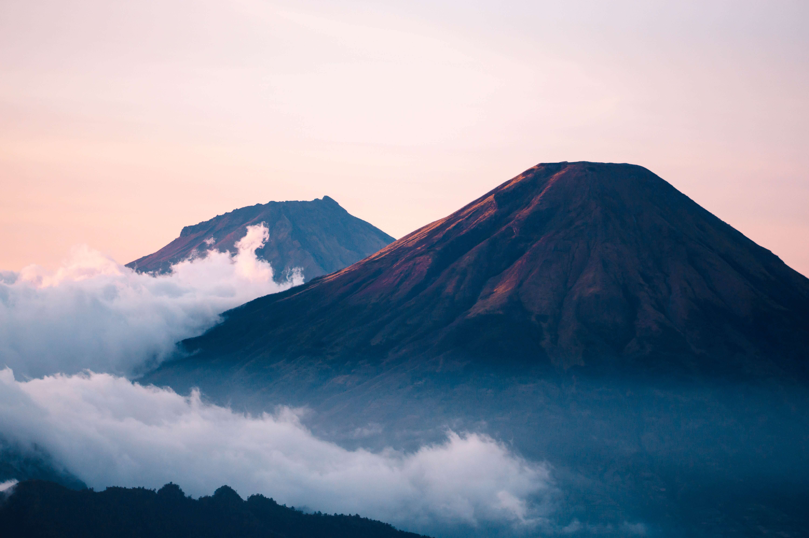

Maravillas volcánicas
Volcanoes are Earth's geologic architects. They've created more than 80 percent of our planet's surface, laying the foundation that has allowed life to thrive. Their explosive force crafts mountains as well as craters. Lava rivers spread into bleak landscapes. But as time ticks by, the elements break down these volcanic rocks, liberating nutrients from their stony prisons and creating remarkably fertile soils that have allowed civilizations to flourish.
Similarly, volcanic mudflows called lahars can be very destructive. These fast-flowing waves of mud and debris can race down a volcano's flanks, burying entire towns.
Although there have been several big eruptions in recorded history, volcanic eruptions today are no more frequent than there were a decade or even a century ago. At least a dozen volcanoes erupt on any given day. As monitoring capacity for—and interest in—volcanic eruptions increases, coverage of the activity more frequently appears in the news and on social media. As Erik Klemetti, associate professor of geosciences at Denison University, writes in The Washington Post: “The world is not more volcanically active, we’re just more volcanically aware.”
The majority of volcanoes in the world form along the boundaries of Earth's tectonic plates—massive expanses of our planet's lithosphere that continually shift, bumping into one another. When tectonic plates collide, one often plunges deep below the other in what's known as a subduction zone.
But each volcano is different. Some burst to life in explosive eruptions, like the 1991 eruption of Mount Pinatubo, and others burp rivers of lava in what's known as an effusive eruption, like the 2018 activity of Hawaii's Kilauea volcano. These differences are all thanks to the chemistry driving the molten activity. Effusive eruptions are more common when the magma is less viscous, or runny, which allows gas to escape and the magma to flow down the volcano's slopes. Explosive eruptions, however, happen when viscous molten rock traps the gasses, building pressure until it violently breaks free.
There are volcanoes on every continent, even Antarctica. Some 1,500 volcanoes are still considered potentially active around the world today; 161 of those—over 10 percent—sit within the boundaries of the United States.There are volcanoes on every continent, even Antarctica. Some 1,500 volcanoes are still considered potentially active around the world today; 161 of those—over 10 percent—sit within the boundaries of the United States.
Ingresa a nuestro Boletín informativo